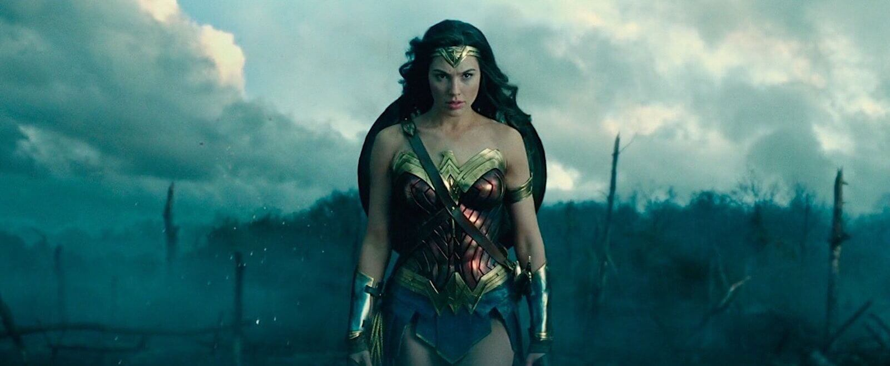
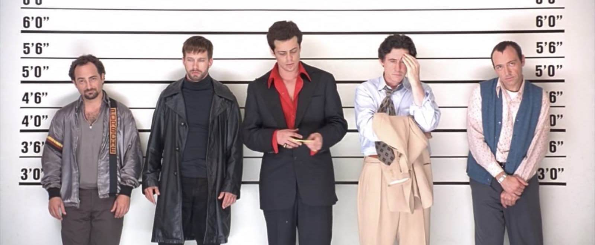

만드는 눈과 읽는 눈을
동시에 기른다
A 화면 정가운데에 반듯하게
B 한쪽으로 비켜서, 바라보는 쪽에 여백을 두고
수직 · 수평 · 사선 · 곡선 · 수렴선
3분할 · 시선 유도 · 프레임 속 프레임
헤드룸 · 룩킹룸 · 대칭과 비대칭
색채 대비 · 장면 한 컷 읽기
| 구분 | 나쁜 구성 | 좋은 구성 |
|---|---|---|
| 관객 경험 | 시선이 헤맨다 — 무엇을 봐야 할지 모름 | 자연스럽게 핵심으로 시선이 간다 |
| 정보 전달 | 중요한 것과 아닌 것이 구분 안 됨 | 중요도에 따라 시각적 위계가 분명 |
| 감정 전달 | 분위기가 느껴지지 않음 | 구성 자체가 감정을 만든다 |
경직 · 강인함 · 권위
고층 빌딩 · 서 있는 왕안정 · 평온 · 고요 · 죽음
누운 인물 · 바다활력 · 긴장 · 역동 · 불안
액션 · 추격 · 공포부드러움 · 유연함 · 자연
강물 · 구불구불한 길깊이감 · 원근 · 방향성
철로 · 복도 · 도로움직일 수 없는 계층의 고정성과, 그 위로 오르려는 상승 욕망을 한 화면에 동시에.
화면을 가로 · 세로 3등분 — 교차점 근처에 피사체를 놓는다
사람의 눈은 정가운데보다 살짝 비켜난 곳을 더 자연스럽고 역동적으로 느낀다
철로 · 도로가 화면 깊숙이 사라지며 시선을 끌어당긴다
눈은 밝은 곳으로 먼저 간다
주변과 다른 색의 피사체에 시선이 모인다
멈춘 배경 속 움직이는 것으로 시선이 옮겨 간다
| 효과 | 설명 |
|---|---|
| 시선 집중 | 이중 프레임이 안쪽으로 시선을 강제 |
| 감금 · 고립 | 인물이 틀 안에 갇힌 느낌 |
| 관음 | 몰래 엿보는 듯한 느낌 |
| 거리 | 인물 사이의 심리적 거리 |
〈기생충〉 반지하 창문 — 기택 가족의 제한된 시야와 갇힌 삶
너무 많으면 어색, 너무 없으면 답답
있으면 여유 · 기대감
없애면 압박 · 절박함
오른쪽을 본다면 → 오른쪽에 더 많은 공간
반대로 도입부 들판 장면에서는 넓은 헤드룸으로 인물의 고독을 보여 줍니다.
| 구분 | 느낌 | 대표 |
|---|---|---|
| 대칭 | 균형 · 안정 · 권위 · 인위적 완벽함 | 웨스 앤더슨 |
| 비대칭 | 역동 · 불안 · 자연스러움 | 봉준호 · 박찬욱 |
〈그랜드 부다페스트 호텔〉 — 모든 장면이 장난감 집처럼 반듯하게
반대색을 나란히
강렬한 긴장 · 시선 집중비슷한 계열의 색
안정감 · 통일된 분위기한 색의 명암만
몽환적 · 세련된 느낌차가운 파랑 ↔ 따뜻한 주황
과거 ↔ 현재 · 현실 ↔ 환상두 반대색의 충돌이 영화 전체의 에너지를 만듭니다.
| 구성 요소 | 전달하는 것 |
|---|---|
| 인물 위치 | 권력 관계 · 심리 상태 |
| 공간의 크기 | 인물의 고독함 · 위압감 |
| 선의 방향 | 긴장 · 이완 · 방향성 |
| 색채 | 감정 · 주제 · 시간 |
| 여백 | 심리적 여유 · 압박 |
| 요소 | 분석 |
|---|---|
| 선 | 계단의 사선 = 오르려는 욕망과 그 한계 |
| 수직 · 수평 | 위로 갈수록 밝고 넓게, 아래로 갈수록 어둡고 좁게 |
| 프레임 속 프레임 | 창문 = 반지하 가족의 제한된 세계 |
| 색채 | 저택의 황금색 ↔ 반지하의 차갑고 어두운 색 |
| 인물 배치 | 상류층은 늘 위, 하류층은 늘 아래 |
복도 끝으로 모이는 선들이 시선을 끌어당긴다
수렴선창문 틀 안에 인물을 한 번 더 가둔다
프레임 속 프레임오른쪽을 보는 인물 — 오른쪽에 공간을 둔다
룩킹룸주황 사막과 파란 하늘을 나란히
보색 대비
